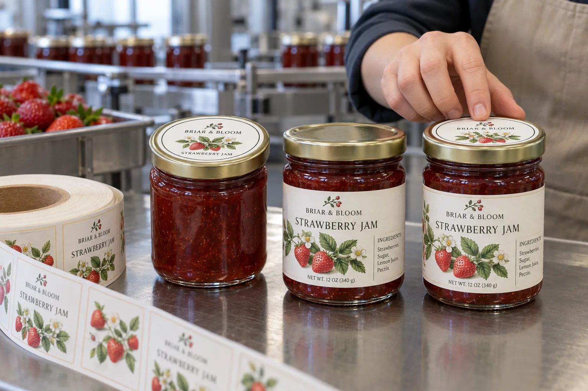

The shopper's view is not the packer's view
I like lid stickers when jars are sold in open trays and customers look down at them. They also help a packer distinguish strawberry from raspberry when several plain glass jars share the same body. But a tiny circle is a poor place to squeeze every ingredient, address and barcode. The shelf-facing body label still has work to do.
HERMA's jam-jar label guidance explicitly offers rectangular body labels and round lid labels. That supports treating them as separate formats with separate measurements, even when their colors and illustration form one brand system.
When one label is enough
Imagine a composite market-stall maker selling one preserve in a shallow display where the front of every jar is visible. A well-sized sidewall label may handle the brand and product identity while leaving the lid clean. If there are only a few jars per batch, a second printed format may add more handling and mismatch risk than it solves.
A composite farm shop stacks several flavors in a top-view tray. A round lid sticker with a large flavor name makes picking easier, while the body label carries the detailed approved copy. The advantage is not decoration; it is faster, more reliable selection. The cost is two label inventories and a need to keep the two flavor identities together at packing.
Keep closure and information decisions separate
Measure the flat lid top inside its rolled edge, then check the body panel, glass seam and corner clearance. A sticker sitting only on the lid is not a tamper-evident bridge. If first-opening evidence is needed, specify a separate seal across lid and jar and trial opening. HERMA describes purpose-designed food closure labels; their function should not be claimed for an ordinary top sticker.
| Format | Strongest use | Check before printing |
|---|---|---|
| Lid-top circle | Top-down flavor recognition | Flat lid diameter and closure rotation |
| Body label | Shelf identity and larger information area | Glass panel, seam and print legibility |
| Both | Coordinated display and picking | SKU matching at both stations |
| Closure bridge | First-opening indication when validated | Opening path and adhesive behavior |
Our buying view
Do not buy two formats just because a mockup looks fuller
I would ask where the jar is viewed and who selects it at packing. If one label solves both jobs, keep the order simple. If a lid label prevents flavor mistakes in a top-view tray, the extra format has a practical reason to exist.
Send the jar and lid brief
- Filled jars, lids and the intended display tray.
- Flat lid-top diameter and usable glass side panel.
- Flavor list and approved product information.
- Hand or machine application sequence.
- Any separate first-opening requirement.
For square jars, see flat-panel sizing and corner clearance. For a genuine opening bridge, see food-packaging seal labels.
Frequently asked questions
Is a lid sticker enough for a jam jar?
It may identify a flavor from above, but check whether all required information and shelf-facing brand content have another suitable place.
Can a round lid label act as a tamper seal?
A label placed only on top of the lid does not bridge the closure. A first-opening feature requires a separately designed and tested construction.
Can lid and body labels be printed together?
They can be coordinated, but confirm each die size, SKU identity, roll setup and application station separately.
Related buyer guides
Review your label specification
Send package photos, label dimensions, material details, quantity and application conditions. Include good and failed samples where possible so the discussion starts with evidence.
Continue with Pickle Jar Labels: Plan for Brine and Wet Handling for a focused purchase checklist.